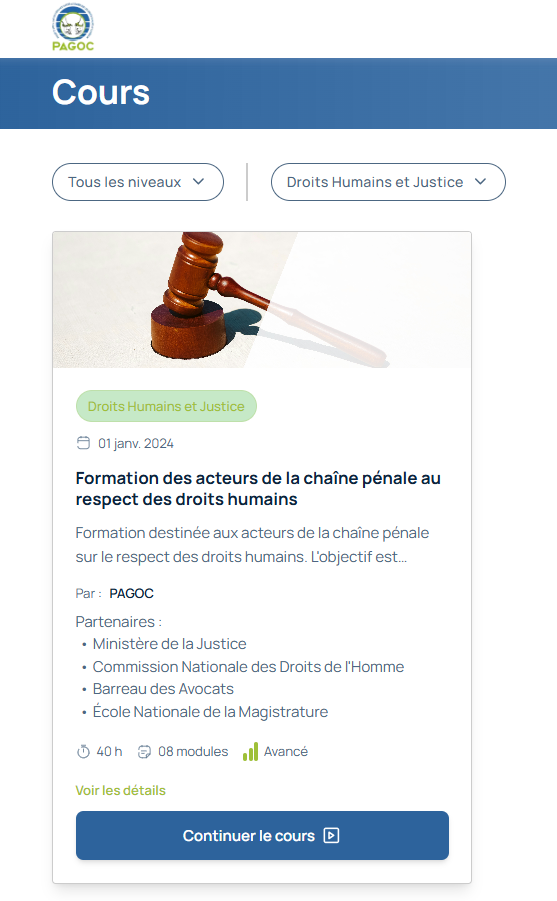

Découvrir et suivre les cours
{kind=link}
Le catalogue des cours : votre bibliothèque d’apprentissage
Le menu « Cours » est votre porte d’entrée vers les 8 modules de formation de PAGOC MOOC. C’est ici que vous découvrirez tous les contenus disponibles, choisirez vos modules et commencerez votre apprentissage.
Ce que vous trouverez dans la section Cours
1. La barre de recherche et de filtrage - « Tous les niveaux » : Filtrez par difficulté (Débutant, Intermédiaire, Avancé) - « Toutes les catégories » : Filtrez par thème (Droits humains, Défense, etc.) - Barre de recherche : Trouvez des cours par mots-clés
2. Les cartes de cours Chaque cours est présenté sous forme de carte avec : - Image d’illustration : Pour identifier visuellement le thème - Catégorie : Ex: « Droits humains », « Défense », « Procédure » - Date : Quand le cours a été publié - Titre du cours : Le nom complet du module - Description : Ce que vous allez apprendre - Auteur : « Par : PAGOC » - Informations pratiques :
Durée (ex: « 15 h », « 90 h »)
Nombre de modules (ex: « 01 module »)
Niveau de difficulté (ex: « Débutant »)
Actions : « Voir les détails » et « Commencer le cours »
Les 8 modules disponibles
Module 1 : Introduction au droit pénal camerounais - Catégorie : Droit pénal - Niveau : Débutant - Durée : 15 heures - Idéal pour : Tous les professionnels débutants - Ce que vous apprendrez : Les bases fondamentales du système pénal
Module 2 : Droits de la défense - Catégorie : Défense - Niveau : Intermédiaire - Durée : 20 heures - Idéal pour : Avocats et défenseurs - Ce que vous apprendrez : Techniques de défense et éthique
Module 3 : Procédure pénale - Catégorie : Droit pénal - Niveau : Intermédiaire - Durée : 25 heures - Idéal pour : Magistrats et acteurs judiciaires - Ce que vous apprendrez : Les étapes de la procédure pénale
Module 4 : Détention et droits des détenus - Catégorie : Droits humains - Niveau : Intermédiaire - Durée : 18 heures - Idéal pour : Acteurs pénitentiaires et défenseurs - Ce que vous apprendrez : Droits fondamentaux en détention
Module 5 : Justice restaurative - Catégorie : Justice restaurative - Niveau : Avancé - Durée : 22 heures - Idéal pour : Médiateurs et professionnels expérimentés - Ce que vous apprendrez : Médiation et réparation
Module 6 : Protection des groupes vulnérables - Catégorie : Protection groupes vulnérables - Niveau : Intermédiaire - Durée : 20 heures - Idéal pour : Défenseurs des droits humains - Ce que vous apprendrez : Protection des populations fragiles
Module 7 : Droits humains et procédure pénale - Catégorie : Droits humains - Niveau : Avancé - Durée : 30 heures - Idéal pour : Experts et formateurs - Ce que vous apprendrez : Conventions internationales et application
Module 8 : Éthique et déontologie - Catégorie : Défense - Niveau : Avancé - Durée : 15 heures - Idéal pour : Tous les professionnels - Ce que vous apprendrez : Règles professionnelles et éthique
Commencer un cours
Méthode 1 : Depuis la page Cours 1. Trouvez le cours qui vous intéresse 2. Cliquez sur « Commencer le cours » 3. Vous serez redirigé vers la première leçon
Méthode 2 : En consultant les détails 1. Cliquez sur « Voir les détails » sur une carte de cours 2. Lisez la description complète 3. Vérifiez les prérequis 4. Cliquez sur « Commencer le cours »
Méthode 3 : Depuis votre tableau de bord 1. Retournez sur votre Dashboard 2. Utilisez la section « Continuer à apprendre » 3. Choisissez un nouveau cours dans les recommandations
Utiliser les filtres efficacement
Filtrer par niveau : - Débutant : Pour commencer sans connaissances préalables - Intermédiaire : Si vous avez déjà des bases - Avancé : Pour approfondir votre expertise
Filtrer par catégorie : - Droits humains : Focus sur les droits fondamentaux - Défense : Techniques de plaidoyer et défense - Droit pénal : Procédures et pratiques pénales - Justice restaurative : Médiation et réparation - Protection groupes vulnérables : Populations spécifiques
Utiliser la recherche : - Tapez des mots-clés comme « détention », « défense », « procédure » - Les résultats apparaîtront instantanément - Vous pouvez combiner plusieurs mots-clés
Pendant votre apprentissage
Structure d’un module typique : 1. Vidéos : Cours filmés par des experts 2. Documents : PDF, textes de loi, articles 3. Quiz : Tests pour valider vos connaissances 4. Activités : Mises en situation et études de cas
Comment progresser efficacement : - Regardez les vidéos en entier avant de passer à la suite - Téléchargez les documents pour les consulter hors ligne - Faites les quiz pour vérifier votre compréhension - Prenez des notes pour retenir les points importants
Navigation dans un cours : - Menu latéral : Voir toutes les sections du module - Barre de progression : Savoir où vous en êtes - Boutons « Suivant/Précédent » : Naviguer entre les leçons - Marque-pages : Sauvegarder vos points d’intérêt
Gérer plusieurs cours en même temps
Est-ce possible ? Oui ! Vous pouvez suivre plusieurs cours simultanément, mais nous recommandons de vous concentrer sur 1-2 modules maximum pour une meilleure qualité d’apprentissage.
Comment organiser votre temps : 1. Fixez des priorités : Quel cours est le plus urgent pour vous ? 2. Planifiez des sessions : Dédiez des moments spécifiques à chaque cours 3. Suivez votre progression : Utilisez « Mon Apprentissage » pour tout suivre
Conseils pour multi-cours : - Alternez entre les cours pour éviter la fatigue - Revoyez régulièrement ce que vous avez appris - N’hésitez pas à mettre un cours en pause si nécessaire
Reprendre un cours interrompu
Comment retrouver votre place : 1. Allez sur votre Dashboard 2. Regardez « Continuer à apprendre » 3. Votre dernier cours apparaît avec votre progression 4. Cliquez sur « Reprendre » pour continuer exactement où vous étiez
Si vous ne voyez pas votre cours : 1. Allez dans « Mon Apprentissage » 2. Cherchez le cours dans votre liste 3. Cliquez sur « Reprendre » à côté du cours concerné
Sauvegarde automatique : - Votre progression est sauvegardée automatiquement - Vos réponses aux quiz sont mémorisées - Vous pouvez reprendre à n’importe quel moment
Obtenir votre certificat
Conditions pour obtenir un certificat : 1. Terminer toutes les sections du module (100%) 2. Obtenir au moins 70% aux quiz finaux 3. Valider l’évaluation finale du module
Comment recevoir votre certificat : 1. Une fois le module terminé, un bouton « Obtenir le certificat » apparaît 2. Cliquez dessus pour télécharger votre attestation PDF 3. Le certificat porte votre nom, le nom du module et la date d’obtention
Partager votre réussite : - Ajoutez votre certificat à votre profil LinkedIn - Partagez-le avec vos collègues et employeurs - Utilisez-le pour valoriser vos compétences
Conseils pour réussir vos cours
1. Soyez régulier - Prévoyez 2-3 sessions par semaine - Même 30 minutes régulières sont efficaces - Créez une routine d’apprentissage
2. Créez un environnement propice - Choisissez un endroit calme - Évitez les distractions (téléphone, notifications) - Ayez du papier et un stylo pour prendre des notes
3. Interagissez avec le contenu - Posez-vous des questions pendant les vidéos - Faites des pauses pour réfléchir - Reliez les cours à votre pratique professionnelle
4. Utilisez les ressources complémentaires - Téléchargez tous les documents utiles - Consultez les liens et références - Rejoignez les forums de discussion
5. Évaluez-vous régulièrement - Faites tous les quiz sans exception - Revoyez les sections où vous avez des difficultés - N’hésitez pas à recommencer un module
Problèmes courants et solutions
« Je ne peux pas commencer un cours » - Vérifiez que vous êtes bien connecté - Assurez-vous d’avoir complété les prérequis - Contactez le support si le problème persiste
« Ma progression ne s’affiche pas » - Rafraîchissez la page - Vérifiez votre connexion internet - Attendez quelques minutes pour la mise à jour
« Je veux changer de cours » - Vous pouvez arrêter un cours à tout moment - Commencez un nouveau cours depuis le catalogue - Votre progression du premier cours est sauvegardée
« J’ai oublié où j’étais » - Allez sur « Mon Apprentissage » - Votre progression est détaillée module par module - Utilisez « Reprendre » pour continuer
Prochaines étapes
Après avoir exploré les cours :
Choisissez votre premier module : Commencez par celui qui vous intéresse le plus
Planifiez votre temps : Fixez-vous des moments régulaires pour étudier
Préparez votre espace : Créez un environnement propice à l’apprentissage
Commencez votre formation : Lancez votre première vidéo !
Votre parcours d’apprentissage commence maintenant
Les 8 modules de PAGOC MOOC sont conçus pour vous donner les compétences dont vous avez besoin pour exercer votre métier avec excellence. Chaque cours est une étape vers une meilleure pratique professionnelle.
Prêt à commencer ? Choisissez votre premier module et lancez-vous !
Comment choisir votre premier cours
Si vous êtes débutant complet : 1. Commencez par le Module 1 : « Introduction au droit pénal camerounais » 2. Il n’a aucun prérequis et vous donnera les bases nécessaires
Si vous avez déjà de l’expérience : 1. Regardez les descriptions des modules 2. Choisissez celui qui correspond le plus à vos besoins actuels 3. Consultez les prérequis indiqués sur chaque carte
Si vous voulez une progression complète : 1. Suivez les modules dans l’ordre numérique (1, 2, 3, 4, 5, 6, 7, 8) 2. Chaque module vous prépare au suivant 3. Vous obtiendrez une formation complète et cohérente